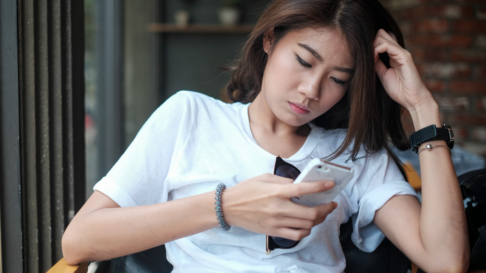

COVID-19: relationship between social media use and prejudice against Chinese Americans
aperture':'0','credit':'','camera':'','caption':'','created_timestamp':'0','copyright':'','focal_length':'0','iso':'0','shutter_speed':'0','title':'','orientation':'0'}' data-image-title='frontiers-communication-prejudice-asian-americans-covid19-pandemic-effects-social-media-united-states' data-large-file='https://frontiersinblog.files.wordpress.com/2020/06/frontiers-communication-prejudice-asian-americans-covid19-pandemic-effects-social-media-united-states.jpg?w=940' data-medium-file='https://frontiersinblog.files.wordpress.com/2020/06/frontiers-communication-prejudice-asian-americans-covid19-pandemic-effects-social-media-united-states.jpg?w=300' data-orig-file='https://frontiersinblog.files.wordpress.com/2020/06/frontiers-communication-prejudice-asian-americans-covid19-pandemic-effects-social-media-united-states.jpg' data-orig-size='1200,675' data-permalink='https://blog.frontiersin.org/frontiers-communication-prejudice-asian-americans-covid19-pandemic-effects-social-media-united-states/' sizes='(max-width: 1024px) 100vw, 1024px' src='https://frontiersinblog.files.wordpress.com/2020/06/frontiers-communication-prejudice-asian-americans-covid19-pandemic-effects-social-media-united-states.jpg' srcset='https://frontiersinblog.files.wordpress.com/2020/06/frontiers-communication-prejudice-asian-americans-covid19-pandemic-effects-social-media-united-states.jpg?w=1024 1024w, https://frontiersinblog.files.wordpress.com/2020/06/frontiers-communication-prejudice-asian-americans-covid19-pandemic-effects-social-media-united-states.jpg?w=150 150w, https://frontiersinblog.files.wordpress.com/2020/06/frontiers-communication-prejudice-asian-americans-covid19-pandemic-effects-social-media-united-states.jpg?w=300 300w, https://frontiersinblog.files.wordpress.com/2020/06/frontiers-communication-prejudice-asian-americans-covid19-pandemic-effects-social-media-united-states.jpg?w=768 768w, https://frontiersinblog.files.wordpress.com/2020/06/frontiers-communication-prejudice-asian-americans-covid19-pandemic-effects-social-media-united-states.jpg 1200w'>
Posted On: 2020-06-12T00:00:00

Content Date: 2020-06-12
Download Date: 2021-07-10
Document ID: L0C04F4EH